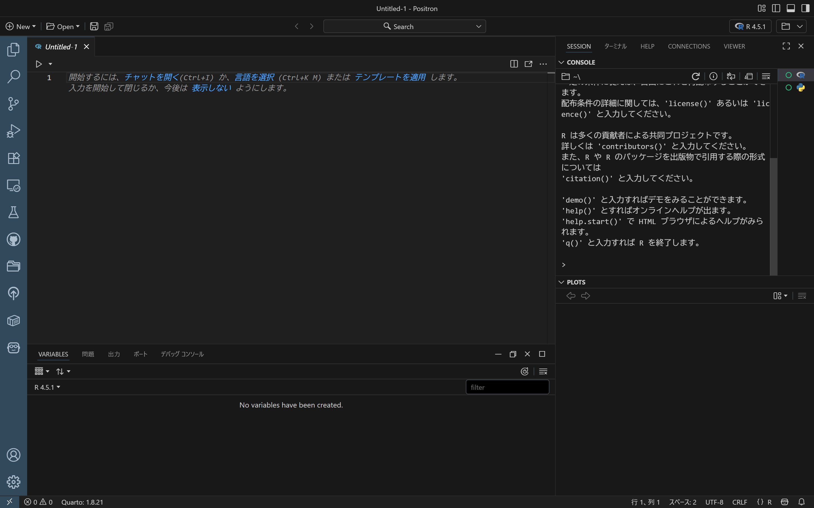
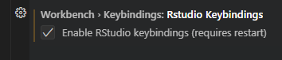
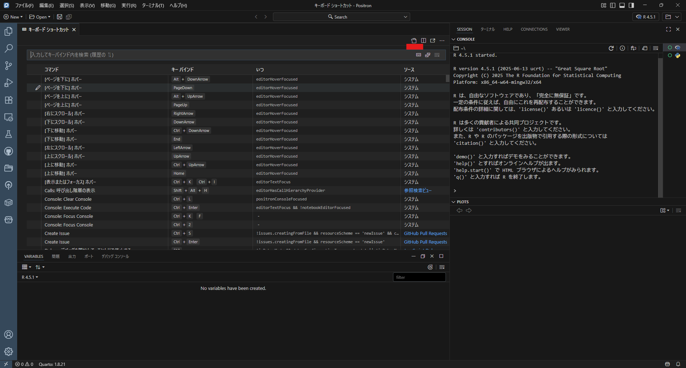
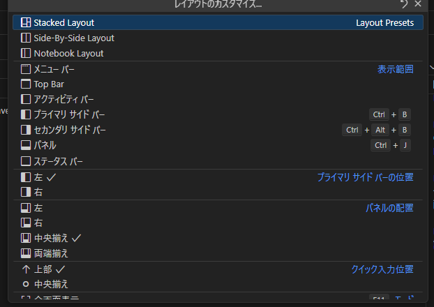
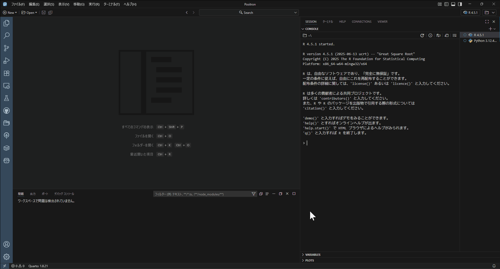
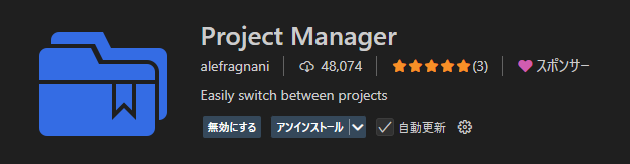
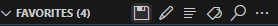
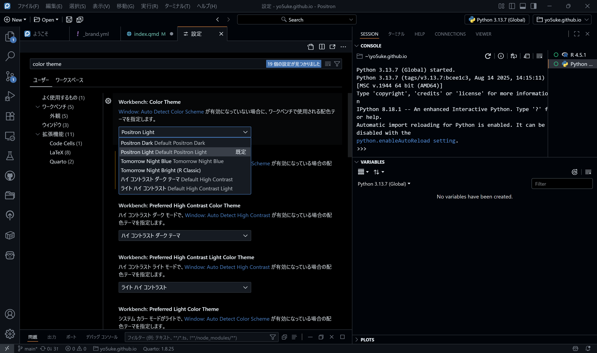
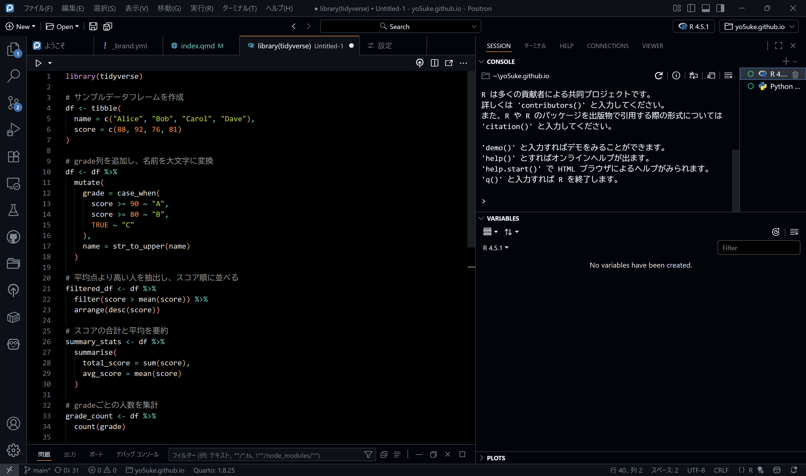

はじめに
9月に入りましたが引き続き暑いですね。オフィスにこもってパソコンをカタカタしているのでまだましですが、たまに外へ出ると秋はいつ来るのかと、考えてしまいます…。
ところで、僕はと言えば最近も仕事でRを使う機会が多いのですが、最近はRStudioではなくPositronを主に使うようにしています。理由はシンプルで、新しいものが好きだからです。
VSCodeをベースに作られていることもあり、なんとなく敬遠していたのですが（RStudioユーザーがVSCodeで満足のいくRの環境を整えるのは一苦労なので…）、RStudioのキーボードショートカットが使えることに気づいたり、レイアウトを変更できることも知れたりと、ようやく新しい環境を試せそう！と思い立って一気に設定を終わらせた次第です1。
今回は個人的に満足がいっている設定をピックアップしてまとめていこうと思います。
この記事は適宜更新する予定です。
Positronとは？
そもそもPositronとは何なんだという方もいらっしゃることを想定し、ごく簡単にPositronについてまとめます。
PositronはPosit社（旧RStudio社）が開発している統合開発環境（IDE）で、VSCodeをベースに作られており、RとPythonのために最適化されているのが特徴です。
従来のVSCodeにおけるRの使い勝手はあまりよくないと個人的に感じており、例えばRStudioで使い慣れたキーボードショートカットを自分で設定しなければいけなかったり、環境変数（格納したデータ等）が見にくかったりしていましたが、PositronではRStudioの要素も取り入れつつ、これまでRStudioを使用していたユーザーにとって移行しやすいコーディング環境が提供されています2。

Positronの画面はこんな感じで、右上の「R 4.5.1」の部分からPythonへの切り替えも可能です。
デフォルトでは下にコンソール、右上に変数とデフォルトのRStudioと同じ構成になっているのですが、このあたりの設定についてもこれから書いていきます。
インストールについては書きませんが、以下からダウンロードできます。
Windowsの方であれば一番上のをダウンロードすればよいと思います。
キーボードショートカットの設定
RStudioからの移行
まずRStudioからの移行を検討する場合、やはりキーボードショートカットは引き続き使えた方が良いですよね。
画面左下歯車マークから「設定」を開きます。すると設定画面が出てきますので、上部に出てきた「設定の検索」窓に「workbench.keybindings.rstudioKeybindings」と入力します（ぜひコピペしてくださいね）。
すると設定が1つヒットし、チェックボックスにはチェックが入っていない状況かと思います。
そこにチェックを入れ、確認出来たら上部の×印から設定を閉じます。再起動が必要ですので、一度Positronを閉じてから再度開いてください。これで基本的なRStudioのキーボードショートカットが使えるようになります。

地味にイヤな設定の解消
ここではWindowsのキーに基づいて説明しています。Macの方は適宜キーを置き換えながら読み進めてください。Macの正しいキーについて存じ上げず、申し訳ありません。
続いて、地味に困ったのがQuarto Markdownにおけるチャンク挿入についてです3。
RStudio上ではチャンク（```{r}で始まるコードブロック）を挿入する際にCtrl-Alt-ICtrl-Alt-Iでチャンクを挿入できるわけなのですが、これはカーソルを置いている位置から始まります。カーソルを置いているその行に```{r}が挿入されるということです。
しかしPositronでは、その行を空行にしたうえで、1行下に挿入される設定になっています。気にされないようであれば放置でよいのですが、僕は気になってしまったので、修正することにしました。
先ほどと同様画面左下歯車マークから「キーボードショートカット」（キーボードを使う場合Ctrl-K+Ctrl-SCtrl-K+Ctrl-S）を開きます。
するとキーボードショートカットに関する設定がずらーっと出てきますが、出てきた画面右上の「キーボードショートカットを開く（JSON）」というアイコンをクリックして開きます。

すると// 既定値を上書きするには、このファイル内にキー バインドを挿入しますという文言とともに[ ]があると思います。
初期段階では何も記載されていないと思いますが、この中に以下を記述します（[ ]は一応表示しています）。
[
{
"key": "ctrl+alt+i",
"command": "editor.action.insertSnippet",
"when": "editorTextFocus && editorLangId == 'quarto'",
"args": {
"snippet": "```{r}\n$0\n```\n"
}
}
]これでデフォルトの設定が上書きされ、Ctrl-Alt-ICtrl-Alt-Iでチャンクを挿入すると、カーソルを置いている行に直接チャンクが挿入されるようになります。
ちなみに、この設定だとRのチャンクが強制的に挿入されるので、Pythonも使う方は困る！と思うかもしれません。
そのような方には、同じ書き方でCtrl-Shift-ICtrl-Shift-Iを使ってPythonのチャンクを挿入するようにするのがおすすめです。そもそもPositronではデフォルトのチャンク挿入がCtrl-Shift-ICtrl-Shift-I（AltAltではなく）であるため、もしRとPythonしか使わないのであれば、これをPython専用のショートカットにしてしまうのがよいのではないでしょうか。
上の設定に書き足す形で、カンマで区切った後ろに以下のように記述します。
[
{
"key": "ctrl+alt+i",
"command": "editor.action.insertSnippet",
"when": "editorTextFocus && editorLangId == 'quarto'",
"args": {
"snippet": "```{r}\n$0\n```\n"
}
},
// ここから追記
{
"key": "ctrl+shift+i",
"command": "editor.action.insertSnippet",
"when": "editorTextFocus && editorLangId == 'quarto'",
"args": {
"snippet": "```{python}\n$0\n```\n"
}
}
]これでCtrl-Shift-ICtrl-Shift-IをPython専用のショートカットに変更できました。やっていることはキーとスニペットを変えているだけで、他は一緒です。
レイアウトの設定
これは個人の好みが大きく、僕がマイナーであることもわかっているので共感いただけないかもしれませんが、僕はコードとコンソールは縦に並べたいタイプの人間です。
特にPositronではRStudioと違って、R MarkdownやQuartoを使っている際にチャンクの下に結果が表示されませんので、コンソールを見えるようにしておくことが重要です。縦に並べてしまうと表示できるスペースが狭く、見にくいため左右並べる設定にします。
また、左右に並べる以外の設定も選択肢がありますので、いろいろ試してみて気に入ったものにしてみてください。
まず、左下の歯車から「コマンドパレット」、あるいはCtrl + Shift + Pを入力します。
表示された画面上部の検索窓に「customize layout」と入力します。すると1件ドンピシャでヒットすると思いますので、それをクリックします。

いろいろな選択肢が出てきますが、デフォルトでは1番上の「Stacked Layout」です。
僕はコンソールを右に持っていきたいという考えから、2番目の「Side-By-Side Layout」を選択しています。同じ手順で元に戻せますので、いろいろ選択してみてください。
ちなみにSide-By-Sideを選択しただけだと、VARIABLESは右側に配置されています。これを僕はスクリプト画面の下に持ってきているのですが、その方法はドラッグするという原始的な方法です。

（2025/09/25追記）Variablesを左下に移す設定をしていましたが、右側をフルでコンソールにする必要性はないかなと思うようになってきたので右側の上半分をコンソールにし、下半分にVariablesを置くことが増えてきました。プロットをあまりしなくなったことが影響しているかもしれません…。プロットをたくさんする方は上の設定の方がスペースを有効活用できるかもしれません。
Project Manager
皆さんはR Projectを使用しているでしょうか。再現可能な研究のための1つのツールにR Projectがあります。ここではそれそのものについて詳しくは書きませんが4、PositronにはR Projectと同様のシステムがありません。
そこでPositron（VSCodeもですが）では、拡張機能を使用してプロジェクト管理を行います。
ざっくりR Projectは.Rprojファイルを作成し、そのファイルが認識されることでそこをワーキングディレクトリとして設定し、here::here()をはじめとした相対パスを使用できるようになり、効率的なプロジェクト管理が可能になります。
前述のようにPositronでは.Rprojファイルは作成できず、代わりにワークスペースを設定することでプロジェクト管理を行います。
このワークスペースとは一体何かと言えば「Positron内でワーキングディレクトリとなるフォルダを開く」ことに他ならないのですが、つまるところ.RprojをダブルクリックしてそのフォルダをRStudioで開くのと同様に、そのフォルダをIDE上で「開く」ことが重要なのです。
ではどうやってそのフォルダを開けばよいのか。それを解決してくれるのが「Project Manager」という拡張機能です。
Positronの左にあるサイドバーから拡張機能のアイコンを開き、検索窓から「alefragnani.project-manager」と検索してください5。

これをインストールすると、サイドバーにアイコンが表示されることと思います。
画面左上の「ファイル」から「フォルダを開く」へと進み、何かプロジェクトを開いてみてください（なければ適当にフォルダを作ってみてください）。
開けたら、Project Managerのアイコンをクリックし、拡張機能の画面を開きます。すると上部に下のような表示があると思います。

そしてアイコンの一番左にあるフロッピーディスク💾をクリックすると、今開いているフォルダがワークスペースとして保存され、下に表示されると思います。つまりエクスプローラーにおけるクイックアクセスへのピン留めと同じ要領で、次回以降表示されるプロジェクトを選択すればそのフォルダを開けるようになるというわけです。
.Rprojのようなファイルこそないものの、ワークスペースを開いていればhere::here()をはじめとしたプロジェクト管理のためのツールは同様に使用可能です。
ぜひプロジェクトはここから保存してみてください。
テーマの変更
デフォルトのテーマ設定
Positronではテーマも変更可能です。VSCodeと基本的な設定は同じですが、このセクションの終わりに拡張機能を利用したテーマの変更方法も書いておきます。
まず、左下の歯車マークから「設定」を開きます。
上部の検索窓に「color theme」と入力します。すると「Workbench: Color Theme」という項目がヒットすると思います。ここがデフォルトでは「Positron Light」になっていると思います。ここをクリックすると、テーマの一覧が表示されます。

ダーク系のテーマが好きな方は「Positron Dark」を選択してください。これでダークモードになります。
他にもいろいろなテーマがあるので、気に入ったものを選んでみてください。
テーマの自動切換え
僕はMicrosoft Storeで入手可能な「Auto Dark Mode」というアプリを使用して、日の出と日没に合わせてWindowsのテーマを自動で切り替えています。昼間ならライトモード、夜ならナイトモードに自動で切り替わるというものです。
PositronはデフォルトでWindowsのテーマに合わせて自動で切り替わるわけではないのですが、同じく設定から「auto detect color scheme」を検索し、「Window: Auto Detect Color Scheme」という項目にチェックを入れると、Windowsのテーマに合わせて自動で切り替わるようになります。
別にAuto Dark Modeを使っていない場合でも、Windowsのテーマを手動で切り替えた際にPositronもそれに合わせて切り替えてくれるようになります。
また、この際にライトのテーマとダークのテーマをそれぞれ設定する必要があります。「Workbench: Preferred Light Color Theme」と「Workbench: Preferred Dark Color Theme」という項目があるので、それぞれ好きなテーマを選んでください。ここで選んだものがWindowsのテーマに合わせて切り替わるようになります（Macでも同様かと思います）。
拡張機能によるテーマの追加
ダークモードに関して、最近1つ新しいテーマを見つけたので、ご紹介します。
こちらはRStudioの「Tomorrow Night Bright」というテーマをPositronに移植するために拡張機能を作成した、という記事です。この拡張機能を用いればRStudioのTomorrow Night BrightのテーマをPositronで使用可能になります。
拡張機能のインストール方法は前述のProject Managerと同様です。拡張機能のアイコンをクリックし、検索窓に「tomorrow night bright」と入力します。するとRユーザーにはおなじみ、六角形のロゴがアイコンの「Tomomorrow Night Bright (R Classic)」という拡張機能が出てくると思いますので、インストールしてください。
インストールできたら、先述の「Workbench: Color Theme」から「Tomorrow Night Bright (R Classic)」を選択してください。これでテーマが適用されます6。

おわりに
以上、Positronの設定について書いてきました。
Positronは今後も発展を続けていくはずですし、さらに便利になることは間違いないと思います。
個人的にはもうRStudioには戻れない、というところまでいってほしいと思っています（笑）
今後もアップデートがあれば更新しますので、よろしくお願いいたします。
注
新しいものが好きな割に敬遠していたのかというご指摘はごもっともですが、ご容赦ください。↩︎
とはいえ今でも使いやすいのはRStudioだと思っています。今後より便利になるという期待も込めて、Positronを使っている面が大きいです。↩︎
ここではR Markdownについては書いていませんが、Positronへの移行を考えている前衛的な皆様であれば、R MarkdownからQuartoへ乗り換えるべきです。ということにして、R Markdownの設定は僕もしていないので、説明から逃げています。↩︎
おそらく「project manager」でも一番上に出ます。↩︎
テーマの自動切換えで使用するには、Preferred Dark Color Themeに設定してください。↩︎